See Us In Action
Real Queens Jobs · Real Equipment
Watch our trucks working across Queens. More videos on our YouTube channel.
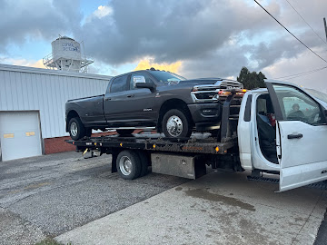
Call our professional tow truck service in Queens to provide you with 24-hour roadside assistance and quick emergency towing in just a phone call. Serving all 115+ neighborhoods.
From emergency towing to roadside assistance, we provide comprehensive tow truck services across every Queens neighborhood, 24 hours a day, 7 days a week.
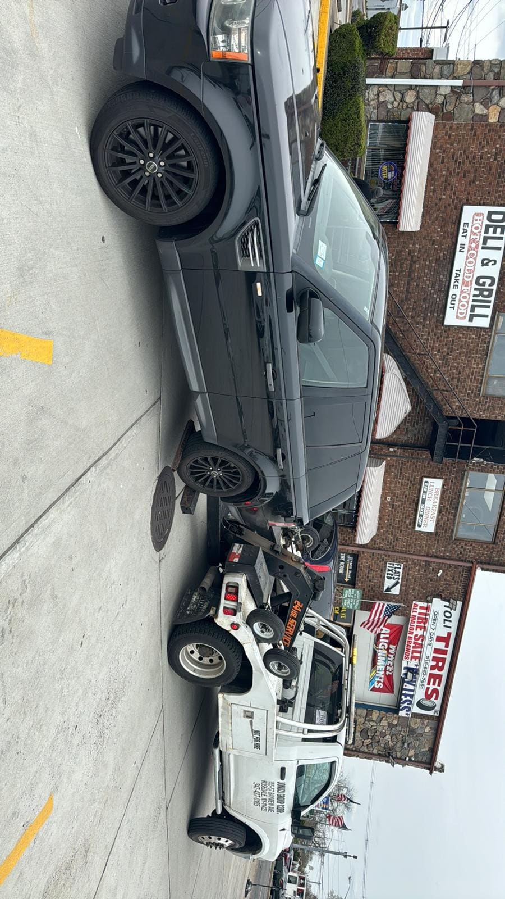
Broken down on the BQE, Queens Blvd, or any Queens street? Our emergency tow trucks respond in under 30 minutes, 24/7/365.
Learn More →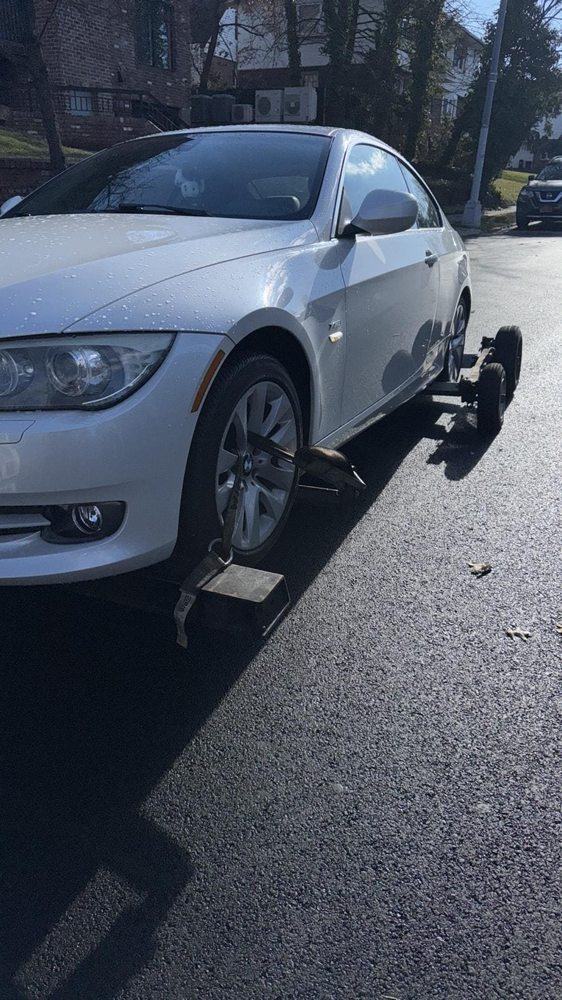
Safe, damage-free flatbed towing for all vehicles including luxury cars, AWD, and lowered vehicles throughout Queens.
Learn More →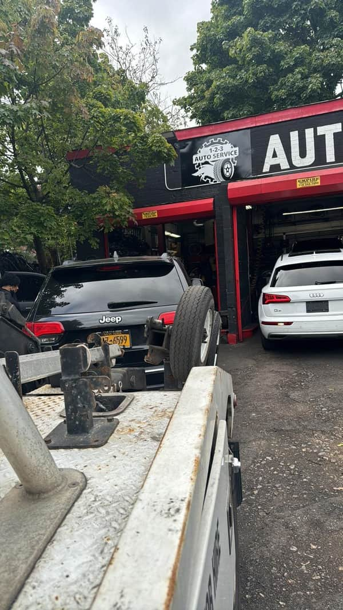
Professional heavy duty towing for trucks, buses, RVs, and commercial vehicles. Equipped for the biggest jobs in Queens.
Learn More →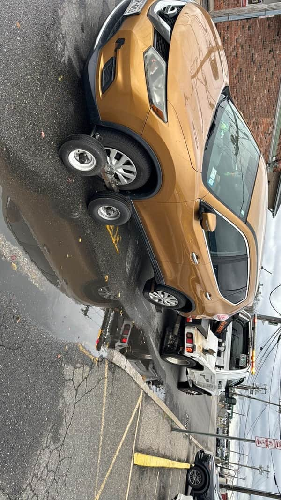
Specialized motorcycle towing with proper strapping and equipment. We treat your bike like our own.
Learn More →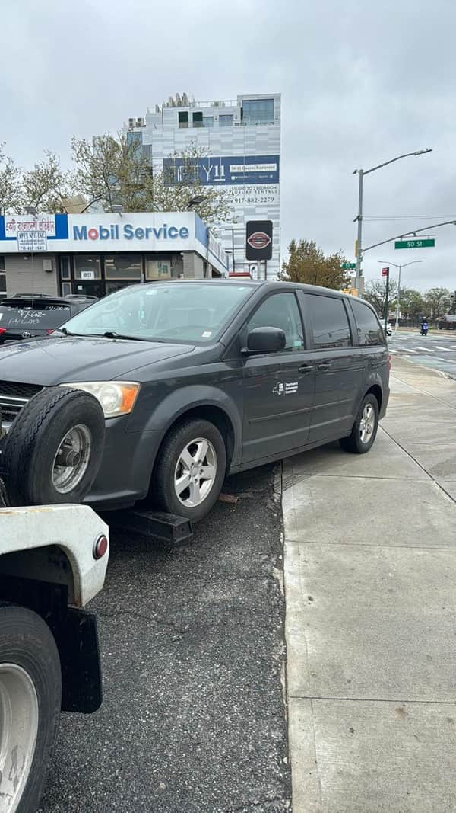
Locked your keys in the car? Our locksmith-trained technicians will get you back in fast, without damage.
Learn More →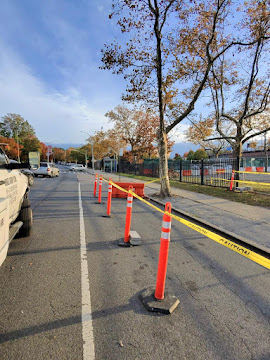
Dead battery? We'll jump start your car on the spot so you can get back on the road in minutes.
Learn More →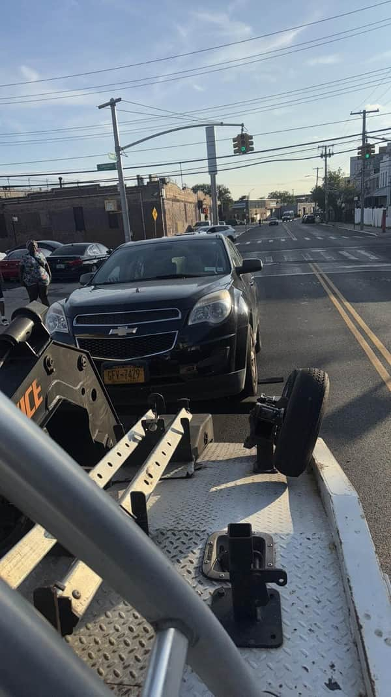
Flat tire on the Van Wyck or anywhere in Queens? We'll swap your tire fast and get you moving safely.
Learn More →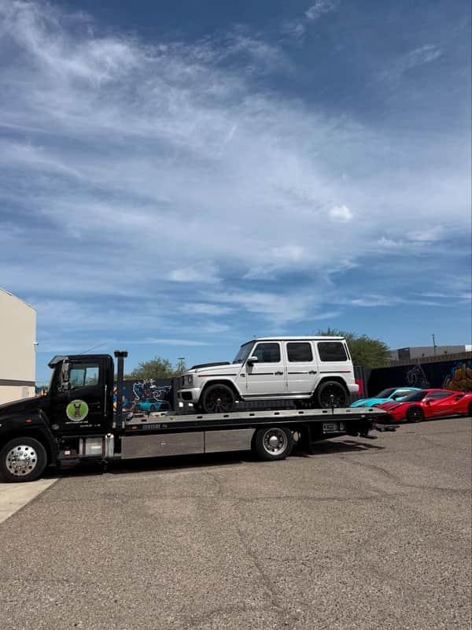
Ran out of gas in Queens? We deliver fuel directly to your location so you don't have to walk to the station.
Learn More →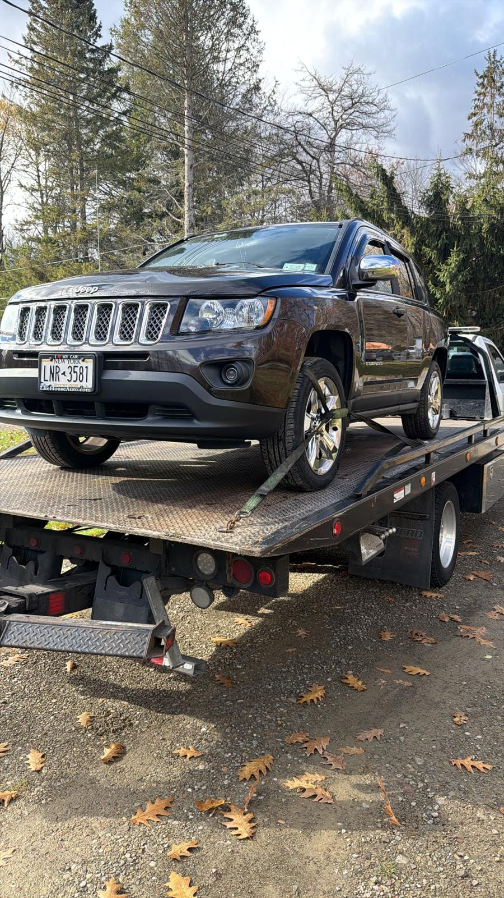
Stuck in a ditch, mud, or snow? Our powerful winch trucks will recover your vehicle safely from any situation.
Learn More →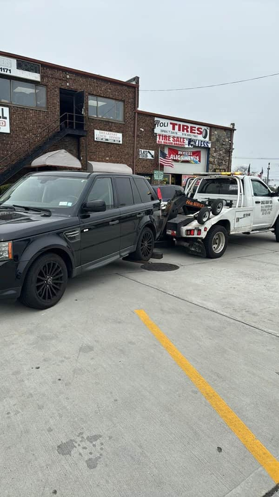
After an accident in Queens, we handle vehicle recovery with care. We work with insurance and police.
Learn More →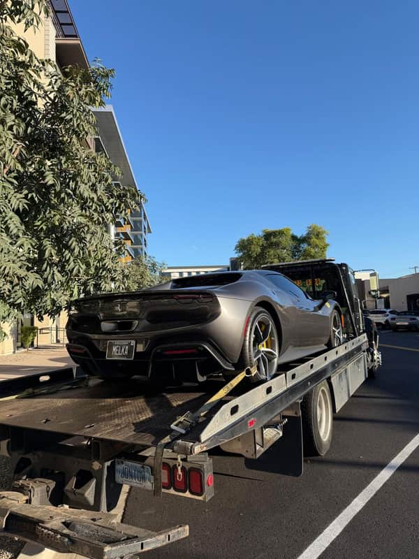
Need your vehicle towed beyond Queens? We offer long distance towing throughout NY, NJ, and the East Coast.
Learn More →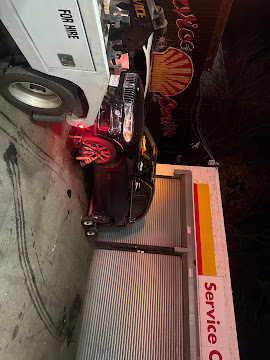
Get rid of your junk car hassle-free. We offer free junk car removal across Queens with same-day pickup.
Learn More →When you need a tow truck in Queens, you need a company that is fast, reliable, and affordable. Here's why thousands of Queens residents choose us.
With tow trucks stationed across Queens, we reach you fast — averaging 15-30 minutes to any neighborhood.
From Astoria to Far Rockaway, Long Island City to Bayside — we cover every inch of Queens, NY.
No hidden fees, no surprises. We provide upfront quotes before any work begins. Competitive rates guaranteed.
Fully licensed, bonded, and insured for your peace of mind. Your vehicle is protected throughout the tow.
Car trouble doesn't wait for business hours. We're here around the clock — holidays, weekends, snowstorms.
Flatbed trucks, wheel-lifts, heavy-duty wreckers, and specialty equipment for any towing situation.
Hundreds of 5-star reviews from satisfied Queens customers. Our reputation speaks for itself.
We accept cash, all major credit cards, and debit cards. Insurance billing available for accident towing.
We provide fast tow truck service and roadside assistance across all Queens, NY neighborhoods. Click on any area to learn more about our services there.
Not stock photography. Every photo below is our own fleet, our own jobs, our own streets across Queens and NYC. More on Instagram.
Real 5-star reviews from our Google Business Profile. Every review below is verified by Google.
"I called for tow truck in Queens area and hired Jonuzi Towing. Super happy with the service — fast and professional. Whenever you guys are in need for tow truck in Queens don't forget to hire Jonuzi towing. Best tow truck service in Queens."
"I needed to get my car to CarMax and they managed to get my car from the tightest of driveways to its destination without any hiccups! Not only that but they also price matched for me and are just the nicest and most efficient people you can work with! Very satisfied, highly recommend."
"My car broke down in the middle of the street, and I was lucky enough to have been in front of a Jonuzi Towing truck who helped me out of the kindness of their heart, drove my car back to my parking lot. Service was fast and efficient. Saved me such a headache and further issues."
"Timely, effective and reliable service. The tow truck driver was very helpful and professional."
"Arrived to assist me quickly. He towed my car to the destination quickly and safely. Great communication. Very reliable."
Watch our trucks working across Queens. More videos on our YouTube channel.
Towing Service Queens NYC is a locally owned and operated towing company serving all of Queens, New York. Based at 155-57 Bayview Ave, we know the streets of Queens like the back of our hand — from the bustling avenues of Flushing and Jamaica to the quiet streets of Douglaston and Malba.
Our fleet of modern tow trucks — including flatbeds, wheel-lifts, and heavy-duty wreckers — is equipped to handle any situation. Whether you need an emergency tow on the BQE, a jump start in Jackson Heights, or a flatbed for your luxury car in Forest Hills, we're here 24/7.
Fully licensed, bonded, and insured. Transparent pricing, fast response, professional service. Call (347) 437-0185 anytime.
⭐⭐⭐⭐⭐ Rated 4.9/5 from 387+ verified reviews
See Our Google Reviews →